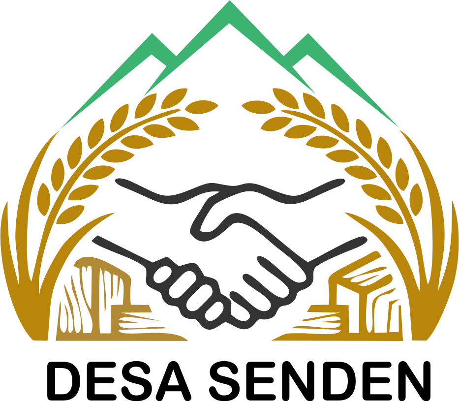

Visi
“NGUPOYO BARENG WARGO SUPOYO DESO BISO TUMOTO”
Misi
- Mewujudkan keamanan dan ketertiban di lingkungan Desa Senden.
- Meningkatkan kesehatan, kebersihan desa, serta mengusahakan jaminan kesehatan masyarakat melalui program pemerintah.
- Mewujudkan dan meningkatkan tata kelola pemerintah desa yang baik.
- Meningkatkan pelayanan maksimal kepada masyarakat desa.
- Meningkatkan kesejahteraan masyarakat desa melalui BUMDes dan membuka lapangan kerja.
- Meningkatkan sarana and prasarana fisik, ekonomi, pendidikan, kesehatan, olahraga, dan kebudayaan.
Makna Lambang & Logo Desa

Arti dan Filosofi Lambang:
Logo Resmi Desa Senden merangkum seluruh identitas, harapan, serta semangat juang masyarakat dalam tatanan nilai kearifan lokal:
- Gunung: Elemen gunung melambangkan kondisi geografis dan kekayaan alam Desa Senden yang asri dan kokoh, sekaligus menjadi panji cita-cita desa yang tinggi untuk terus berkembang, yang diperkuat dengan penggunaan warna Hijau Senden (#3CB371) sebagai representasi kesuburan, ketenangan, serta komitmen nyata warga dalam menjaga kelestarian ekologi dan lingkungan.
- Padi: Simbol padi mewakili sektor pertanian sebagai pilar kesejahteraan dan ketahanan pangan warga, mencerminkan karakter masyarakat yang rendah hati sesuai filosofi ilmu padi, sementara balutan warna Cokelat Keemasan (#B8860B) pada elemen ini memancarkan kehangatan, masa panen yang melimpah, dan nilai ekonomi tinggi dari hasil bumi lokal.
- Kayu: Berada di bagian bawah sebagai fondasi penyokong perekonomian, elemen potongan kayu menegaskan identitas kuat Desa Senden sebagai sentra industri mebel dan inovasi pengolahan limbah grajen, dipadukan dengan warna Cokelat Kayu (#B8860B) yang memvisualisasikan unsur bumi, kemandirian, dan stabilitas tradisi industri lokal yang mengakar kuat di masyarakat.
- Berjabat Tangan: Berada di titik pusat logo sebagai pengikat seluruh elemen, jabat tangan merupakan simbol mutlak dari kerukunan, semangat gotong royong, dan sinergi kolaboratif antara pemerintah, warga, pelaku usaha, serta akademisi, yang dipertegas oleh garis berwarna Hitam Arang (#333333) untuk memberikan kesan persatuan yang solid, tangguh, dan komitmen yang tidak mudah goyah dalam memajukan desa.